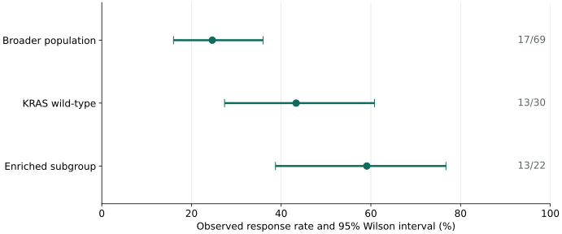
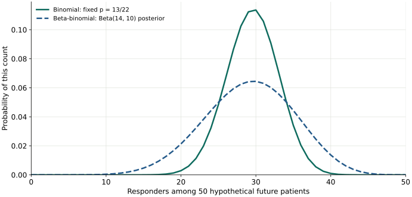

1. Start with the current data
Iovance’s 29 October 2026 release reports the following IOV-LUN-202 results at the 14 October 2026 cutoff. These are aggregate observations, not patient-level data.
| Population | Responses / patients | Observed rate |
|---|---|---|
| Broader non-squamous mNSCLC population | 17 / 69 | 24.6% |
| KRAS wild-type | 13 / 30 | 43.3% |
| KRAS-mutant | 4 / 35 | 11.4% |
| KRAS wild-type + HER2 wild-type | 13 / 25 | 52.0% |
| KRAS wild-type + HER2 wild-type + current/former smoker | 13 / 22 | 59.1% |
The 30 KRAS wild-type and 35 KRAS-mutant patients account for 65 of 69 patients; four were KRAS-unassessed. The wild-type rows are nested populations and must not be added together.
The release includes two unconfirmed partial responses overall, one in each KRAS group. The enriched subgroup’s 13 responses include one awaiting confirmation. Treat 13/22 as the reported count at this cutoff; the notebook also examines 12/22 as a confirmed-response sensitivity analysis.
The observed sample proportion is p̂ = 13/22 = 0.5909. This describes the selected sample. The true response probability, p, in a defined future population remains unknown.
2. Inspect selection before fitting a model
13/22 is not inherently a biased description of those 22 patients. The concern is what happens when a subgroup found after examining outcomes is used to estimate performance in new patients. Searching across candidate subgroups can favor unusually high observed rates: a form of selection optimism.
Here the reported denominator narrows from 30 to 25 to 22 while the numerator stays at 13. That pattern motivates a prospective hypothesis. It does not, by itself, separate biological enrichment from sampling variation and selection. The aggregate release does not reveal the full search process, so these calculations cannot estimate or correct its bias.
The companion illustrates the mechanism with a seeded simulation: eight independent, hypothetical groups have the same true response probability; selecting the highest observed rate makes that group look better on average. It is a teaching example, not a reconstruction of Iovance’s analysis.
The assumptions to carry forward
- A binary response outcome, assessed consistently over a comparable follow-up period.
- Independent patients with a common response probability within the modeled population.
- A future cohort comparable in eligibility, treatment, assessment, and clinical characteristics.
- A subgroup definition fixed before evaluating the new cohort.
A single-arm response proportion also cannot establish a treatment effect relative to a control. Our calculations describe response rates and conditional predictions.
3. Quantify sampling uncertainty with Wilson
A 95% Wilson interval gives an interval estimate for a binomial response probability. It answers a different question from a range of future responder counts.
The confidence procedure has approximately 95% coverage over repeated samples when its assumptions apply. It does not assign a 95% probability to this fixed interval containing p, and it does not make every value inside equally likely.
Wilson does not adjust for the retrospective search. Its nominal coverage is not guaranteed after selecting a favorable subgroup. A wide interval captures ordinary sampling uncertainty; selection, outcome confirmation, and differences between cohorts remain additional concerns.

The formula and Python calculation
For p̂ = x/n and z = Φ⁻¹(0.975), calculate a center and half-width, then take center ± half-width.
from math import sqrt
from statistics import NormalDist
def wilson(x, n, confidence=0.95):
z = NormalDist().inv_cdf((1 + confidence) / 2)
p_hat = x / n
denominator = 1 + z*z/n
center = (p_hat + z*z/(2*n)) / denominator
half = z * sqrt(p_hat*(1-p_hat)/n + z*z/(4*n*n)) / denominator
return center - half, center + half
wilson(13, 22) # approximately (0.3873, 0.7674)For a two-sided 95% interval, 5% remains in the tails: 2.5% in each. That gives 0.025 and 0.975. Wilson uses the normal quantile z ≈ 1.96; a future count prediction uses quantiles of a count distribution instead.
4. Only then model future outcomes
Take 50 new patients as an illustration, not as a claim about a planned trial’s size. The predictions below assume comparability to the enriched subgroup and do not correct for retrospective selection.
A fixed-p binomial scenario
If we assume p = 13/22, then X ~ Binomial(50, 13/22). The expected count is 50 × 13/22 ≈ 29.5 responders. A central quantile interval is 23–36. This includes future sampling variation while treating the assumed probability as known.
A beta-binomial predictive model
A Bayesian alternative starts with an explicit prior. With a uniform Beta(1, 1) prior and a binomial likelihood, the posterior is Beta(14, 10). Averaging future binomial predictions over this posterior gives a beta-binomial distribution: expected count 29.2, with a central 95% predictive interval of 17–40.
This accounts for uncertainty about p within that model, as well as random variation among future patients. The prior and likelihood matter; it does not automatically account for subgroup selection or clinical differences. The notebook compares other priors.

| Model or scenario | Expected responders | Central 95% count interval |
|---|---|---|
| Binomial, p = Wilson lower endpoint ≈ 0.387 | 19.4 | 13–26 |
| Binomial, p = 13/22 ≈ 0.591 | 29.5 | 23–36 |
| Binomial, p = Wilson upper endpoint ≈ 0.767 | 38.4 | 32–44 |
| Beta-binomial, Beta(14, 10) posterior | 29.2 | 17–40 |
The endpoint scenarios are separate “what if” assumptions. Their combined endpoints are not a calibrated 95% prediction interval. Count intervals use the 0.025 and 0.975 quantiles; discreteness means their probability coverage can exceed 95%.
Wilson supplies an interval estimate for p. A beta-binomial model requires a prior and a likelihood; it does not take a Wilson interval as its input.
Learn by changing the example
Explore conditional predictions for new patients
Change the hypothetical future cohort size or the fixed-p assumption. Compare the resulting responder-count intervals.
Future responder count
The beta-binomial model keeps the reported 13/22 data and Beta(1,1) prior, giving a Beta(14,10) posterior. Changing the fixed-p choice does not change those observations. Neither prediction corrects retrospective selection or differences between cohorts.
5. Test the hypothesis in new patients
Freeze the subgroup definition, outcome criteria, follow-up, analysis population, and statistical analysis plan before looking at the new outcomes. Then compare the new observations with predictions that were made in advance.
Independent prospective evidence can test whether the response signal reproduces. Larger samples reduce ordinary sampling uncertainty, but do not repair a selected estimate simply by being larger. Response durability, safety, and the trial design also matter for clinical interpretation.
The useful roadmap is observed data → selection and assumptions → uncertainty → conditional prediction → independent validation.
Sources and reproducibility
- Iovance primary release, 29 October 2026. Source of the counts, subgroup definition, response confirmation status, and data cutoff. This is a dated case study, not a live clinical update.
- NIST: confidence intervals for proportions. Wilson score interval method.
- SciPy: beta-binomial distribution. Reference for the probability mass function used in the companion’s standard-library implementation.
The companion contains the aggregate data, seeded selection simulation, Wilson calculations, prediction intervals, prior sensitivity, and checks. It requires Python 3.9+ and Matplotlib. Run the cells in order in Jupyter; the mathematical calculations use Python’s standard library.
Educational analysis of aggregate results; not a patient-specific treatment recommendation or a valuation model.